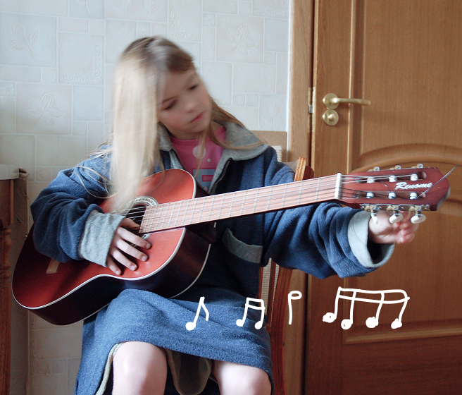

london, uk
ui/ux designer
ex-arch. designer
Hey, I'm Daria! I used to design buildings — now I design digital experiences. I strive to create emotionally resonant design that will not only improve metrics but delight the user, making a lasting and memorable impact.
JUMP TO CASES

When I was a kid playing in a school band, I wanted to become a rockstar. At least that's what I wrote in my English essay in seventh grade. And then added, "In case that doesn't work out, my second best option would be a web designer."
Since then, I've taken a few detours — a degree in project management, five years in architectural design, and a few wedding gigs — but I've come full circle to those childhood resolutions. I'm not quite a design rockstar (yet) but my twelve-year old self would be proud.

Redesign for a charity foundation to boost donor engagement and donation flows; selected among 15 entries, now in development.
VIEW CASE

Landing page for a stylist to strengthen their personal brand and draw in clients.
VIEW CASE

Redesign for a home appliance store. Improved UI, navigation, and product discoverability.
VIEW CASE
My previous experience in architecture and music performance resulted in a unique blend of skills and strengths I bring to the table:
Accounting for interdependencies between parts of the project during the design and execution.

Developed through composition in architectural drawings, now applied to guiding the eye through intuitive layouts.
Honed in architecture, finding creative solutions while balancing technical requirements, deadlines, and budgets.

Refined through architectural drawing, where accuracy was essential to bring ideas to life. After all, if I can align walls perfectly, I can do so with pixels.
*(pun intended)
On stage, the goal was to make people feel. In design, it's the same, just with fewer violins.

Years of classical music trained me to recognise rhythm, flow, and repetition — handy when designing interfaces that shouldn't feel like improvised jazz.
Living abroad meant tuning into diverse cultural perspectives — essential when designing for various users who don't think like me.

Built through adapting to new countries and careers, staying resourceful and focused under uncertainty.
Connect to make this world a better place some memorable and impactful designs that will (hopefully) move it in the right direction.
some memorable and impactful designs that will (hopefully) move it in the right direction.